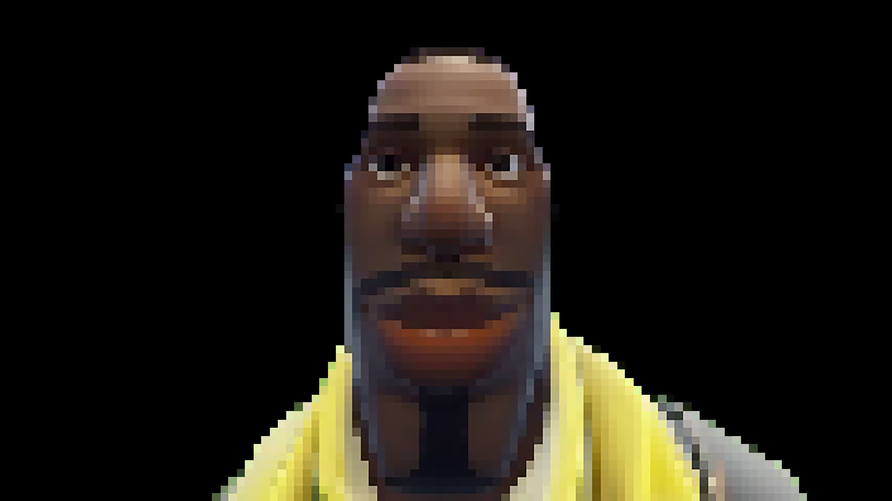

"Een foto van een fortnite character/skin."

BronHet leven is als een reis door een eindeloos landschap. Soms wandel je door zonovergoten velden waar alles lijkt mee te zitten, en andere keren moet je door stormen en donkere bossen waar je de weg even kwijt bent. Maar juist die variatie, die onverwachte bochten en heuvels, maken de reis de moeite waard. Elke dag brengt nieuwe kansen, nieuwe uitdagingen, en nieuwe mensen op je pad. Het belangrijkste is om door te blijven lopen, want elke stap brengt je dichter bij nieuwe avonturen die je je misschien nooit had kunnen voorstellen.
 Bron
Bron
生活就像是一条充满未知的道路，每一个转弯都可能带来新的景色。我们有时在平坦的道路上悠然前行， 享受阳光与微风；有时则必须穿越风雨，面对突如其来的挑战。然而，正是这些无法预料的起伏， 才让人生如此丰富多彩。每一次的挫折都是一种成长，每一段旅程都是一次体验，塑造了我们是谁。 继续走下去吧，不要停下脚步，因为每一个新的起点都可能是你从未想象过的美好开始。 生活的魅力，就在于它的不可预测性和无限的可能性。
Bron